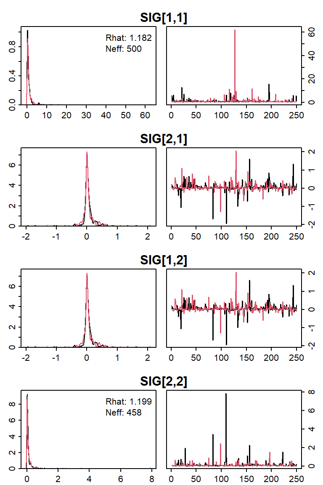

This vignette is intended to get you up and running using ‘postpack’ to process your MCMC output by showcasing some of the main features.
‘postpack’ requires that your MCMC samples are stored in mcmc.list objects (class and methods supplied by the ‘coda’ package). MCMC samples should be produced from at least two chains – single chain output has not been tested with ‘postpack’ functions. Some MCMC interfaces produce this output by default, while others require an extra step to convert to mcmc.list.
JAGS
mcmc.list output is returned by:
rjags::coda.samples()jagsUI::jags.basic()$samples element of jagsUI::jags()
NIMBLE
To obtain mcmc.list output, users should set the samplesAsCodaMCMC = TRUE argument when calling nimble::runMCMC().
Stan
The output of rstan::stan() can be converted to mcmc.list format using rstan::As.mcmc.list().
WinBUGS/OpenBUGS
The output of both:
can be converted to mcmc.list format using coda::as.mcmc.list() or postpack::post_convert().
If your samples were generated another way (e.g., a custom MCMC algorithm or a package like ‘MCMCpack’), check out ?postpack::post_convert to see how you may be able to reformat them.
This vignette uses an example mcmc.list object called cjs to illustrate the main features of ‘postpack’, see ?cjs or vignette("example-mcmclists") for more details. To follow along, load it and ‘postpack’ into your session:
You can return the dimensions of the MCMC run using:
post_dim(cjs)
## burn post_burn thin chains saved params
## 11000 50000 200 2 500 21These elements should be self-explanatory, but see ?post_dim for details. You can extract one of these dimensional elements quickly by specifying the types argument, e.g., notice that there are 21 saved nodes by running post_dim(cjs, types = "params").
The parameter names of these nodes will be crucial in subsetting them, so you should be able to check them out quickly at any time. This is the purpose of the get_params() function:
get_params(cjs)
## [1] "B0" "sig_B0" "B1" "sig_B1" "b0" "b1" "SIG" "p"This shows you the base node names that were monitored during model fitting. If you wish to see the element indices associated with each node as well, supply the type = "base_index" argument:
get_params(cjs, type = "base_index")
## [1] "B0" "sig_B0" "B1" "sig_B1" "b0[1]" "b0[2]"
## [7] "b0[3]" "b0[4]" "b0[5]" "b1[1]" "b1[2]" "b1[3]"
## [13] "b1[4]" "b1[5]" "SIG[1,1]" "SIG[2,1]" "SIG[1,2]" "SIG[2,2]"
## [19] "p[2]" "p[3]" "p[4]"A cornerstone of ‘postpack’ is the post_summ() function, which is for extracting posterior summaries for particular nodes of interest.
## sig_B0 sig_B1
## mean 0.8440230 0.243479572
## sd 0.6187583 0.262166509
## 50% 0.6820298 0.178356796
## 2.5% 0.2766108 0.005735707
## 97.5% 2.4394721 0.820640886The output is in a simple, easily subsettable matrix format (unlike coda::summary.mcmc()), which makes plotting these summaries more straight-forward. Presented by default are posterior mean, standard deviation, and the 50%, 2.5%, and 97.5% quantiles. You can report other quantiles using probs if desired and round them using digits:
## sig_B0 sig_B1
## mean 0.844 0.243
## sd 0.619 0.262
## 2.5% 0.277 0.006
## 25% 0.490 0.081
## 50% 0.682 0.178
## 75% 1.035 0.319
## 97.5% 2.439 0.821One of the key features is that the params argument selects nodes based on regular expressions, so all elements of the "b0" node can be summarized with:
post_summ(cjs, "b0")
## b0[1] b0[2] b0[3] b0[4] b0[5]
## mean 1.3753033 2.3192679 1.751486 1.5200421 1.0824184
## sd 0.2067011 0.3564031 0.238889 0.2032504 0.2077227
## 50% 1.3674581 2.2779459 1.728931 1.5075479 1.0754654
## 2.5% 0.9614656 1.7836702 1.324638 1.1597562 0.6748646
## 97.5% 1.8053107 3.1633955 2.287703 1.9605019 1.5194312Several ‘postpack’ functions accept the params argument (always in the second argument if it is present) to specify queries from the mcmc.list passed to post, so learning to use it is key. More information on using regular expressions to extract particular nodes can be found in vignette("pattern-matching").
Estimates of the uncertainty associated with MCMC sampling in the mean and quantiles can be obtained using the mcse argument (which calls mcmcse::mcse() and mcmcse::mcse.q()):
post_summ(cjs, "^B", mcse = TRUE)
## B0 B1
## mean 1.59031238 0.415103100
## sd 0.49113008 0.212836348
## 50% 1.56878458 0.397436350
## 2.5% 0.55133227 0.061825217
## 97.5% 2.58753866 0.863829917
## mcse_mean 0.01359695 0.011192343
## mcse_50% 0.01724213 0.009013355
## mcse_2.5% 0.18139264 0.025923187
## mcse_97.5% 0.06398231 0.042813775Summaries for each chain can be obtained using the by_chain = TRUE argument:
post_summ(cjs, "^B", by_chain = TRUE)
## , , chain1
##
## B0 B1
## mean 1.5571300 0.4180811
## sd 0.4614706 0.2401460
## 50% 1.5502780 0.3988950
## 2.5% 0.5012706 0.0608274
## 97.5% 2.5107643 0.8543241
##
## , , chain2
##
## B0 B1
## mean 1.6234948 0.41212506
## sd 0.5178997 0.18191380
## 50% 1.5922041 0.39674020
## 2.5% 0.5687639 0.07524337
## 97.5% 2.6084912 0.87875912‘postpack’ features two primary ways of diagnosing the convergence/adequate sample behavior of MCMC chains: numerically and visually. Both methods use the params argument to allow users to have control over which nodes get diagnostics.
post_summ() includes two additional arguments for obtaining numerical diagnostics:
## sig_B0 sig_B1
## mean 0.8440230 2.434796e-01
## sd 0.6187583 2.621665e-01
## 50% 0.6820298 1.783568e-01
## 2.5% 0.2766108 5.735707e-03
## 97.5% 2.4394721 8.206409e-01
## Rhat 1.0220000 1.043000e+00
## neff 500.0000000 4.320000e+02neff = TRUE triggers a call to coda::effectiveSize() to estimate the number of MCMC samples that are independent and Rhat = TRUE triggers a call to coda::gelman.diag() to calculate the commonly used Rhat convergence diagnostic (numbers near 1 are ideal, greater than 1.1 may be problematic). "Rhat" will always be rounded to three digits, and "neff" will always be rounded to an integer, regardless of the value of the digits argument.
Viewing the density and trace plot for a parameter is another common way to evaluate algorithm convergence. The diag_plots() function serves this purpose (which, unlike coda:::plot.mcmc(), allows plotting the densities color coded by chain and only for specific nodes):
diag_plots(cjs, params = "SIG")

Options exist to:
show_diags argument, which accepts value of "always", "never", or "if_poor_Rhat" with the last one being the default. See ?diag_plots for details).ext_device argument).dims argument).layout argument).save argument, which then requires that you enter the file argument, which is the file name of the PDF complete with the ".pdf" extension).keep_percent = 0.8 is passed to post_thin(), and would discard 20% of the samples prior to trace plotting. This thinning does not affect the density plot visual – all retained samples are plotted there.The dims and layout arguments are set to "auto" by default – for adjustment of these settings, see ?diag_plots.
The more chains there are in the mcmc.list object passed to the post argument, the more colors will be displayed.
Often you will want to take a subset out of your output while retaining each saved posterior sample, for example, to plot a histogram of the samples or to calculate the posterior of some derived quantity as though it had been included as part of the model code.
b0_samps = post_subset(cjs, "b0")
By default, the output will be a mcmc.list which allows it to play nicely with the rest of the ‘postpack’ functions (e.g., get_params(b0_samps)). However, performing plotting or calculation tasks on posterior samples might be easier if they were combined across chains and stored as a matrix (nodes as columns, rows as samples):
b0_samps = post_subset(cjs, "b0", matrix = TRUE)
Note that if you wish to retain the chain and iteration number of each posterior sample when converting to a matrix with post_subset(), you can pass the optional logical arguments chains and iters (both are FALSE by default).
head(post_subset(cjs, "b0", matrix = TRUE, chains = TRUE, iters = TRUE))
## CHAIN ITER b0[1] b0[2] b0[3] b0[4] b0[5]
## [1,] 1 11200 1.275155 2.632859 1.860819 1.708103 0.8804635
## [2,] 1 11400 1.308511 2.077802 1.518087 1.198710 0.9843441
## [3,] 1 11600 1.338846 2.473211 1.358235 1.156759 0.8060235
## [4,] 1 11800 1.654078 2.703028 1.498338 1.279799 1.0339362
## [5,] 1 12000 1.118555 2.313318 1.819527 1.189711 0.9702624
## [6,] 1 12200 1.188926 2.653793 1.633183 1.539144 0.8438322In some cases, it may be easier to keep all nodes except those matched by params. For this this, you can use post_remove() (if ask = TRUE, you will be prompted to verify that you wish to remove the nodes that were matched – this is the default):
# check out param names get_params(cjs)
## [1] "B0" "sig_B0" "B1" "sig_B1" "b0" "b1" "SIG" "p"# remove all SIG nodes cjs2 = post_remove(cjs, "SIG", ask = FALSE) # did it work? get_params(cjs2)
## [1] "B0" "sig_B0" "B1" "sig_B1" "b0" "b1" "p"array_format()
Notice that the "SIG" node is a matrix (there are two dimensions of element indices in the node names):
(SIG_ests = post_summ(cjs, "SIG", digits = 2))
## SIG[1,1] SIG[2,1] SIG[1,2] SIG[2,2]
## mean 1.09 0.05 0.05 0.13
## sd 3.19 0.26 0.26 0.45
## 50% 0.47 0.02 0.02 0.03
## 2.5% 0.08 -0.33 -0.33 0.00
## 97.5% 5.95 0.58 0.58 0.67You may want to create a matrix that stores the posterior means (or any other summary statistic) in the same format as they would be found in the model. For this, you can use array_format():
array_format(SIG_ests["mean",])
## [,1] [,2]
## [1,] 1.09 0.05
## [2,] 0.05 0.13Although this is a basic example, this function becomes more useful for higher dimensional nodes – dimensions between 2 and 10 are currently supported.
array_format() requires a vector of named elements, where the element names contain the correct indices to place them in (e.g., "SIG[1,1]" and "SIG[2,2]"). Based on the indices in the element names, array_format() determines the dimensions of the object in the model and places the elements in the correct location.
array_format() will respect missing values. As an example, suppose the the model did not specify what "SIG[2,1]" should be. In this case, it will not be returned as a tracked node element in the mcmc.list (at least in JAGS). We can simulate this behavior by removing that node from the output, and seeing that array_format() inserts an NA in the proper location:
cjs2 = post_remove(cjs, "SIG[2,1]", ask = FALSE) array_format(post_summ(cjs2, "SIG")["mean",])
## [,1] [,2]
## [1,] 1.094471 0.04547222
## [2,] NA 0.12787612vcov_decomp()
The "SIG" node represents a variance-covariance matrix in the model. Sometimes it is desirable to decompose this matrix into a vector of standard deviations and a correlation matrix. Rather than perform this calculation on the posterior summary of "SIG", we can perform it for each posterior sample to obtain a posterior of the correlation matrix. This is the purpose of vcov_decomp():
SIG_decomp = vcov_decomp(cjs, param = "SIG")
## Decomposing variance-covariance matrix node: SIG (2x2)
##
## Note the characteristics of the output obtained:
class(SIG_decomp)
## [1] "mcmc.list"## burn post_burn thin chains saved params
## TRUE TRUE TRUE TRUE TRUE FALSEget_params(SIG_decomp, type = "base_index")
## [1] "sigma[1]" "sigma[2]" "rho[1,1]" "rho[2,1]" "rho[1,2]" "rho[2,2]"The nodes "sigma[1]" and "sigma[2]" represent the square root of the diagonal elements "SIG[1,1]" and "SIG[2,2]" (and are thus the same as the "sig_B0" and "sig_B1" nodes stored in cjs), and the "rho" elements represent to correlation matrix – and posterior samples exist now for each. The names used for these newly-created nodes can be changed using the sigma_base_name and rho_base_name arguments.
You can now build the posterior median correlation matrix:
array_format(post_summ(SIG_decomp, "rho")["50%",])
## [,1] [,2]
## [1,] 1.0000000 0.2685727
## [2,] 0.2685727 1.0000000When using vcov_decomp(), you are recommended to always keep check = TRUE, which will ensure that the samples are from a valid variance-covariance matrix prior to performing the calculation. Setting invert = TRUE will take the inverse of the matrix from each posterior sample prior to performing the calculations (e.g., if you had monitored a precision matrix rather than a covariance matrix).
post_thin()
If your downstream analyses of the posterior samples require many calculations, then it may be advantageous to develop the code with a smaller but otherwise identical version of the posterior output before unleashing them on the full output. You can thin the chains at quasi-evenly spaced intervals using post_thin():
post_thin(cjs, keep_percent = 0.25)
Which would retain 25% of the samples from each chain, and return the result as an mcmc.list object. You may instead use the keep_iters argument to specify the number of iterations you wish to keep per chain.
post_bind()
It may be desirable to combine posterior samples from the same MCMC run together in a single object. This case may arise when calculating derived quantities, and for organizational purposes you want to have them in one object as opposed to two. The two objects must have the same number of chains and saved iterations, and should be calculated from the same model run.
mcmc.listsThe derived quantities stored in SIG_decomp from above are stored as an mcmc.list object and were calculated from the same model using consistent rules, so have the same dimensions. This makes it easy to use:
cjs = post_bind(post1 = cjs, post2 = SIG_decomp)
and note that you have the new calculated nodes in you main object:
get_params(cjs)
## [1] "B0" "sig_B0" "B1" "sig_B1" "b0" "b1" "SIG" "p"
## [9] "sigma" "rho"You can now quickly verify that "sig_B0" and "sig_B1" are the same as "sigma[1]" and "sigma[2]", respectively:
post_summ(cjs, "sig")
## sig_B0 sig_B1 sigma[1] sigma[2]
## mean 0.8440230 0.243479572 0.8440230 0.243479572
## sd 0.6187583 0.262166509 0.6187583 0.262166509
## 50% 0.6820298 0.178356796 0.6820298 0.178356796
## 2.5% 0.2766108 0.005735707 0.2766108 0.005735707
## 97.5% 2.4394721 0.820640886 2.4394721 0.820640886mcmc.list and one matrix
Suppose instead that your derived quantities are stored as a matrix: iterations along the rows and quantities along the columns. Binding this to an mcmc.list object involves:
1.) Obtaining the matrix of the derived quantity(ies),
2.) Deciding on a name for each of your quantities, and
3.) Binding the derived list to the main list.
For step (1), generate such a matrix of derived quantities now, representing the inverse logit transformation of each of the "b0" elements:
# extract the raw samples from cjs in matrix form b0_samps = post_subset(cjs, "b0", matrix = TRUE) # perform a derived quantity calculation eb0_samps = exp(b0_samps)/(1 + exp(b0_samps))
Now you have a derived quantity, so for step (2) change the names that each quantity will be stored as:
Finally, for step (3) combine the samples using post_bind():
cjs = post_bind(post1 = cjs, post2 = eb0_samps)
If the two objects contain duplicate node names, the values from the object passed to the post2 argument of post_bind() will have the suffix supplied under the argument dup_id ("_p2" by default), and a warning will be returned.